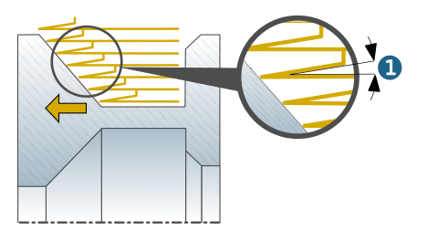

Strategy
Strategy
Axial roughing (1): Machining is performed parallel to the axis of the turning surface.
Axial roughing with ramp (2): Axial roughing with ramped plunging of the tool into the stock model (only available for Constant orientation).
 |
Ramp angle (1): Angle of the ramp when plunging into the stock model or at the transition between infeed planes (only available for Axial roughing with ramp).
|  |
Cutting side
Inside (1)/ Outside (2): The external shape of a workpiece is created by using the Outside option, and the internal shape by using the Inside option.
 |
Infeed direction
To left (1)/ To right (2): Machining is performed from right to left or from left to right in the direction of the axis of the turning surface.
 |
Cutting mode
Oneway: Machining in constant orientation.
Zigzag: Machining with alternating orientation.
Options
Radial / axial limit: Limits the machining area of the tool used in the radial or axial direction.
Radial compensation
Pre-plunge: During finishing, the tool is plunged at the transition of the defined contour from the axial to the radial direction. Removing material here prevents the tool from engaging with two sides of the insert at the same time in the following machining step. The Pre-plunge option also supports smaller retraction movements.
 |
Radial compensation value (1): Radial deviation from the model contour in final finishing. The radial compensation value is necessary due to the deflection of the tool, which is affected by the following factors: feedrate (f), cutting depth (ap), geometry of the tool, cutting speed (Vc), and workpiece material.
 |